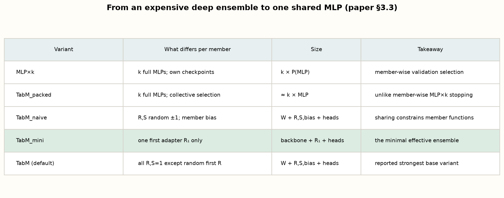
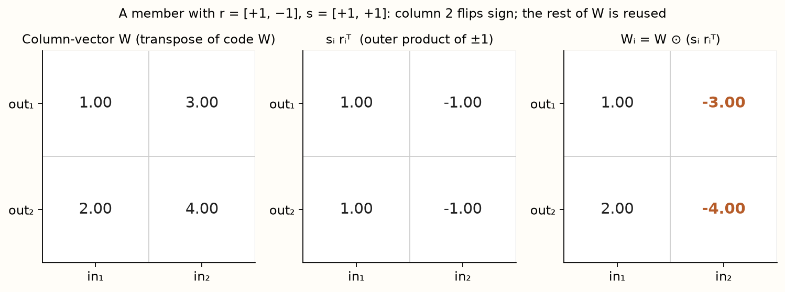
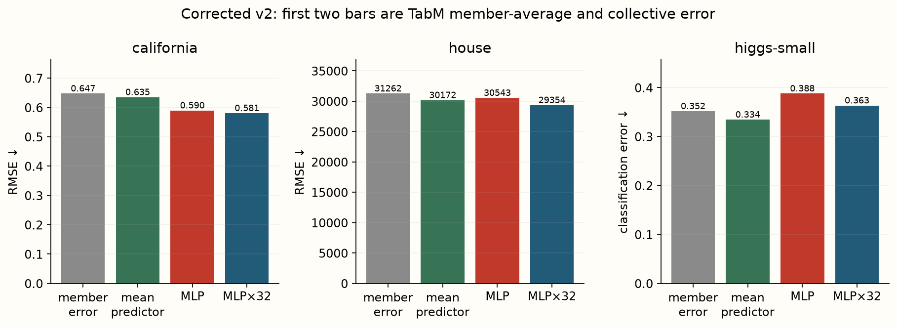
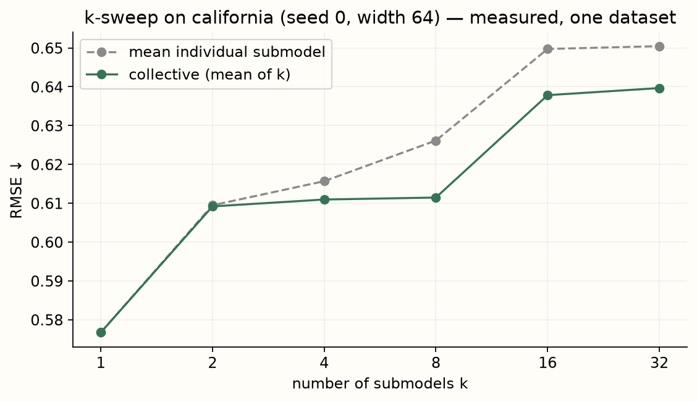
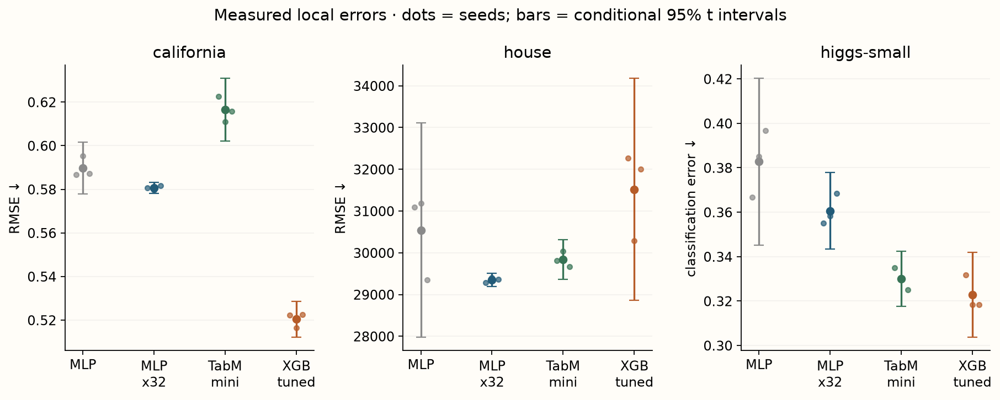
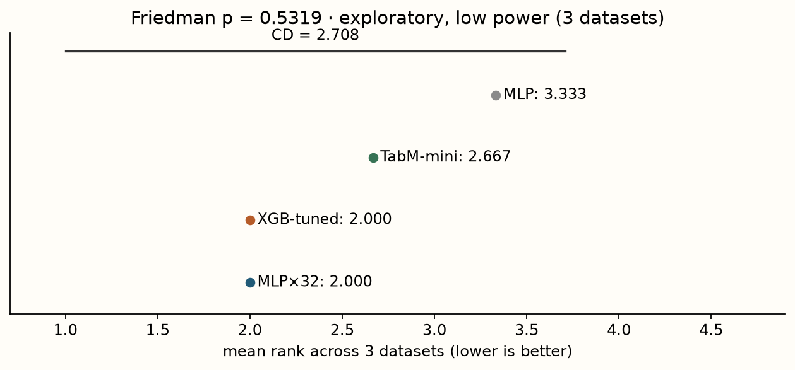

Year 2 · Quarter 2 · Lesson 054
TabM — parameter-efficient ensembling
One MLP that behaves like 32, and why its average beats each one.
L053 asked whether a strong recipe could carry a plain MLP, and left a question: when a model wins, does the gain come from a better individual model, a better recipe, or an ensemble? TabM answers with the third. It turns one MLP into an efficient ensemble of k submodels that share almost all of their weights, produces k predictions per row, and averages them. Your win is to build the numeric version, see the core BatchEnsemble layer exactly, and measure the effect that carries the paper: the submodels are weak individually but strong collectively. For the relational mission this sets the practical bar — the authors report TabM as the best tabular deep-learning model on a 46-dataset benchmark, so any relational or architectural gain must now beat one MLP wrapped in cheap ensembling.
Read Gorishniy, Kotelnikov & Babenko, TabM: Advancing Tabular Deep Learning with Parameter-Efficient Ensembling (arXiv 2410.24210, ICLR 2025), §3 (the model) and §5 (the analysis), in one sitting; use the notebook for the implementation and evidence in a second. We build TabM-mini — the minimal effective variant — with numeric inputs only.
Recall before reading
1. The overlooked opportunity: ensembling
A deep ensemble is several networks of the same architecture, trained independently under different random seeds, whose predictions are averaged. Averaging a group of accurate-but-different models reliably beats any one of them, which is why a deep ensemble usually outperforms a single network. The cost is blunt: training and storing k full models. TabM keeps the accuracy of ensembling while paying almost none of that cost. Source: §1.
The trick is parameter-efficient ensembling: build one network whose forward pass produces k predictions from k implicit submodels that share most of their weights. The paper adapts BatchEnsemble (Wen et al., 2020) to tabular MLPs and finds it "right away outperforms popular attention-based models, such as FT-Transformer, while being simpler and more efficient." Informally, this mirrors GBDT: a strong model built by combining many simple learners. Source: §1, contributions.
Two design decisions do the work, and we return to both: the submodels are trained jointly (one optimiser step updates all of them together), and they share most weights. The paper's summary: joint training lets you stop when the ensemble is best, and weight sharing "apparently serves as a form of regularization." Source: §3.5.
Why averaging helps only some kinds of error¶
Write member i's regression prediction as the true conditional mean plus an error eᵢ. The ensemble error is the average of those errors. If each member has error variance σ² and every pair has correlation ρ, the variance of the k-member average is σ²[ρ+(1−ρ)/k]. This follows by expanding the variance of a sum into k variance terms and k(k−1) covariance terms.
For k=4 and ρ=0, the variance is σ²/4. For ρ=0.75 it is 0.8125σ². Adding members cannot average away the shared component. As k grows, the expression approaches ρσ², not zero. The calculation assumes equal variances and equal pairwise correlation; use it as intuition rather than a fitted law for every TabM ensemble.
Bias matters as well. If every member makes the same systematic mistake, averaging preserves it. “Diversity” is useful when different predictions contain complementary information about the target. Randomly making a strong predictor worse can increase disagreement without improving the ensemble.
TabM aims to obtain useful diversity with shared expensive matrices and relatively cheap member-specific parameters. This creates a tension: sharing reduces parameter storage and can couple learning beneficially, but it also prevents members from being independent fits. The experiment should measure the collective result, individual members and cost rather than assuming independence from the member count.
Three axes that a single ensemble score hides¶
Separate member quality, error dependence and aggregation. A weak member may help if its useful errors differ from the rest; a strong but redundant member may add little. The aggregation rule can also change the result even with identical members. Inspect these axes before interpreting why the ensemble improved or failed.
2. Model architecture
Lesson 054 / architecture study
TabM · separate members, shared matrices
Trace this: How do identical input rows take different paths through the same W?
The forward path
- Broadcast the rowMake k member views; the first learned sign adapter differentiates them.
B × F → B × k × F - Share expensive weightsAdapt input/output directions around W; ReLU and dropout follow.
B × k × hidden width - Use member headsEach member has an independent output projection.
B × k × classes - Aggregate probabilitiesSoftmax each member, then mean over k. Training averages member losses.
B × classes
Inside the key operation
Two adapters, one shared matrix
x=(2,3), W=[[1,2],[3,4]], S=1, bias=0.
| stage ↓ | member A | member B |
|---|---|---|
| R | (1,1) | (1,−1) |
| x ⊙ R | (2,3) | (2,−3) |
| × shared W | (11,16) | (−7,−8) |
Pre-activation adapter fixture. The probability example is a separate head-output fixture showing why operation order matters.
Variant & evidence. The local mini variant omits later multiplicative adapters; full local TabM retains them. Both preserve member biases and heads. Neither is k independently trained dense backbones.
Our scope is the numeric forward path of TabM-mini: a plain MLP backbone whose weights are shared across k submodels, with a single per-member adapter at the input and k separate output heads. The full TabM variant adds per-member adapters to every layer (initialised to have no effect at the start); the paper's strongest reported variants also add piecewise-linear feature embeddings (the "†" models), which we exclude. Categorical inputs (one-hot in the paper) are excluded here. Source: §3.3 and Figure 1.
The model processes a batch of rows. After preprocessing, each row vector is broadcast to k identical copies, giving a tensor of shape [B, k, p]. The first adapter R₁ — a matrix of learned signs, initialised to ±1 — multiplies the copies coordinate-wise, so the k copies stop being identical before the shared weights ever mix the features. This one adapter is the source of diversity in TabM-mini. The copies then pass through N shared blocks, each a linear map with the shared weight W, a ReLU nonlinearity (max(0, ·)), and dropout (randomly zeroing activations during training as regularisation). Finally, k independent linear heads produce k predictions, and the model averages them. Source: §3.3.
What is shared is the backbone weight W of every block — so the whole model is about the size of one MLP. What is not shared are the small adapters and the k heads. For classification the average is taken over softmax probabilities (softmax turns raw scores into a distribution via exp(aᵢ)/Σⱼexp(aⱼ)); for regression it is the mean of the raw outputs. There is no retrieval memory and no pretraining: the target reaches a loss during training and is never an input.

3. The BatchEnsemble layer
This is the load-bearing operation. Take any linear layer l(x) = Wx + b. A deep ensemble gives member i its own full matrix Wᵢ. BatchEnsemble instead keeps one shared W and gives member i three small adapters: two multiplicative vectors rᵢ (applied to the input) and sᵢ (applied to the output), and an additive bias bᵢ. The member computes (§3.2):
lᵢ(x) = sᵢ ⊙ ( W ( rᵢ ⊙ x ) ) + bᵢ which equals giving member i the matrix Wᵢ = W ⊙ ( sᵢ rᵢᵀ ).
Here ⊙ is coordinate-wise multiplication and sᵢ rᵢᵀ is the outer product (a rank-one matrix whose (o,i) entry is sᵢ[o]·rᵢ[i]). So each member reuses the shared W but rescales its rows and columns by its own ±1 pattern. Adding a member costs only 3d new numbers per layer — negligible beside W's d². To create diversity, the adapters of all members are initialised randomly with ±1. Stacked over members, the layer runs all k in parallel: l_BE(X) = ((X ⊙ R) W) ⊙ S + B with X of shape [k, d]. Source: §3.2.

Toggle the ±1 signs below. At initialisation TabM sets the non-first adapters to 1 (not random), so Wᵢ = W exactly — the adapter has no effect yet — and the model behaves like TabM-mini; training then frees those adapters to add expressivity. Watch that the two computation routes always agree: the adapter route and the explicit Wᵢ·x are the same layer.
Follow two members through one shared matrix¶
Use row-vector convention. Let x=(2,3), shared W=[[1,2],[3,4]], zero bias and output adapters S=(1,1). Member A has input adapter Rₐ=(1,1); member B has Rᵦ=(1,−1). A sends (2,3) into W and obtains (11,16). B sends (2,−3) into the same W and obtains (−7,−8). The matrix is shared; the effective function differs.
In this convention, member i's effective matrix entry is Rᵢ,a Wₐ,b Sᵢ,b. The adapter multiplies an entire input direction and an entire output direction. It cannot independently choose every entry of a dense matrix. Calling the adapter a low-rank multiplicative modulation does not mean that the resulting effective matrix must itself have low rank.
For width d on both sides, the shared matrix uses d² parameters. A full BatchEnsemble layer adds roughly k(2d+d) parameters when both multiplicative adapters and member biases are included. Independent dense layers instead use about k(d²+d). At large d, sharing the d² term can save substantial storage. Activations still carry a member axis, so compute and activation memory do not become independent of k.
The local mini variant keeps the initial input adapter and omits later multiplicative adapters, while retaining member biases and independent output heads. The full local TabM variant uses adapters through the backbone. These variants must not be conflated in an architecture caption: their sharing patterns are different.
The first random sign adapter breaks member symmetry. Later adapters initialized to one initially preserve the shared transformation. If every member had identical parameters, identical inputs and identical stochastic behavior, gradient updates would have no reason to separate them. The initialization is therefore a load-bearing part of the ensemble construction.
5. Weak individually, strong collectively
This is the paper's headline analysis and the mechanism worth internalising. The prediction of TabM is the mean of its k submodels. The paper trains without early stopping and plots each submodel's individual performance against the collective mean: the submodels look overfitted individually, while their collective prediction generalises substantially better. Even the single best submodel is no better than a plain MLP. This is "strict evidence of a non-trivial diversity of the submodels: without that, their collective test performance would be similar to their individual test performance." Source: §5.1.
Why does averaging help? If k predictors each have error variance σ² and average pairwise correlation ρ, the variance of their mean is σ²·(ρ + (1−ρ)/k). As k grows, the second term vanishes and the floor is σ²·ρ. So the payoff is set by diversity (low ρ), not by k alone: identical members (ρ=1) give no benefit; only diverse members average into something stronger. Move the sliders — notice that raising k stops helping once ρ is large, which is exactly why TabM invests in cheap diversity (weight sharing plus the first ±1 adapter) rather than only in large k.

6. The k knob and submodel pruning
How many submodels? The paper sweeps k and finds three things: larger backbones (bigger n, d) can accommodate more submodels effectively; too high a k can be detrimental, because weight sharing limits how many submodels can productively coexist; and too narrow (d=64) or too shallow (n=1) a TabM is suboptimal on the middle-to-large datasets studied. Source: §5.3.

Because the submodels are explicit, TabM can also be pruned after training: greedily keep the subset of heads with the best collective validation score. The paper reports this keeps only 8.8 ± 6.6 of the 32 submodels on average, at a slight performance cost, for faster inference. That the average lives in a handful of submodels is another sign the effect is about diversity, not raw count. Source: §5.2.
Increasing k changes both the estimator and the computation¶
There are two different experiments. Train separate models at k=1,4,16 and compare their final predictors; or train once at k=16 and evaluate subsets of its members. The first changes the training objective's coupled system and computational budget. The second studies the redundancy of a fixed trained ensemble. A pruning curve from the second is not a training-scaling curve from the first.
If you select a subset using validation performance, subset choice is another adaptive decision. Choosing the best subset on test labels would leak evaluation feedback. A fixed first-m-member rule is easy to reproduce but can be sensitive to member ordering; randomized subsets with saved seeds provide a clearer view of average subset behavior.
Measure time on the intended device. A larger batched member dimension can use hardware more efficiently even while doing more arithmetic. Parameter counts alone cannot predict latency, and latency alone cannot describe peak activation memory. Report batch size, member count, precision and whether timing includes preprocessing.
Read weak members without dismissing the ensemble¶
Compare each member's loss with the aggregate loss and inspect paired error dependence. If members are individually weaker than standalone MLPs but their average is competitive, that is compatible with the method's purpose. It does not establish that weakness caused diversity or that any weak model would help.
A useful follow-up fixes the trained outputs and changes only aggregation or subset size. Another retrains under a fixed total compute budget. Keep these questions separate in the exit report, then state which evidence supports a practical choice of k.
7. What exactly are we comparing?
The curriculum asks us to train TabM as the current best DL baseline. To answer L053's carried question directly, we compare four deployment procedures on the same rows and metric: a single MLP (the k=1 individual), a deep ensemble MLP×32 of 32 independently-seeded MLPs (the expensive ensemble), TabM-mini with k=32 (the parameter-efficient ensemble), and XGB-tuned (a six-candidate XGBoost search, carried from L053 for tree continuity).
Data contract: three real numeric tasks — California Housing, House 16H and Higgs Small — from the author-released TabR archive reused since L052. We keep those released splits and take label-blind row caps of 1200/600/600 with selection seeds 53/54/55; model seeds are 0/1/2. All neural arms use z-score preprocessing, width 64, depth 3, 64 epochs, batch 256, dropout 0.1, Adam at one shared learning rate, and last-best-validation-epoch selection. This deliberately reuses the compact L052/L053 archive so the lesson runs on CPU; it does not recreate the TabM 46-dataset benchmark, its domain-aware (temporal) splits, feature embeddings, or its per-model tuning.
This is an honest but small regime, and the paper is explicit that narrow/small TabM is suboptimal — so we predict before reading the numbers. The robust, transferable result to look for is the diversity effect (collective versus individual), not a win over trees. Prediction files, split indices, source hashes, library versions and selected epochs are recorded. The paper verdict is INCOMPARABLE.
8. Read the evidence without importing a story

| Task / error ↓ | MLP | MLP×32 | TabM-mini | XGB-tuned | TabM submodel (mean) |
|---|---|---|---|---|---|
| California / RMSE | 0.590 ± 0.005 | 0.581 ± 0.001 | 0.617 ± 0.006 | 0.520 ± 0.003 | 0.625 |
| House 16H / RMSE | 30543 ± 1034 | 29354 ± 64 | 29839 ± 190 | 31521 ± 1072 | 30844 |
| Higgs / class. error | 0.383 ± 0.015 | 0.361 ± 0.007 | 0.330 ± 0.005 | 0.323 ± 0.008 | 0.352 |
Values are mean ± sample standard deviation across three model seeds (see the figure for intervals). RMSE is the root of mean squared error in target units; classification error is the fraction of wrong argmax predictions, not AUROC. The last column is the mean over the 32 individual submodels of TabM.
What holds. On all three tasks the TabM collective error is below its mean individual submodel (California 0.617<0.625; House 29839<30844; Higgs 0.330<0.352) — the diversity mechanism reproduces every time. And on all three the deep ensemble MLP×32 beats the single MLP, exactly as ensembling should. What is mixed. The parameter-efficient ensemble is not uniformly best: TabM-mini beats the single MLP on two tasks (House, Higgs) but loses on California; it beats the expensive MLP×32 only on Higgs. What does not hold as a clean story. No arm dominates: XGB-tuned wins California and Higgs, but is last on House where every neural arm beats it. Averaged over the three tasks the mean ranks tie MLP×32 and XGB at 2.0, TabM-mini at 2.67, single MLP at 3.33 — and the Friedman test returns p = 0.53, i.e. no significant difference. This is exactly why the protocol verdict is INCOMPARABLE, not "TabM wins" or "TabM loses".

The justified conclusion is narrow: parameter-efficient ensembling reproduces the collective-beats-individual mechanism here, but a small, narrow TabM does not win on these three capped tasks. It does not show that TabM loses generally, that ensembling is useless, or that the paper is wrong — we changed width, depth, epochs, splits, dataset sizes and dropped feature embeddings. The paper's own large-scale evidence is the next section.
9. Build it, then test your explanation
Download the student notebook · Read the prepared lab · Open in Colab after the files are pushed.
Live TODO functions implement the BatchEnsemble linear layer, the packed heads, the mean-over-members loss, and the ensemble prediction. The model and trainer are visible PROVIDED cells. CHECK cells verify the equivalence Wᵢ = W ⊙ (s rᵢᵀ), the no-op initialisation of non-first adapters, that member outputs are distinct after the first ±1 adapter, and that the collective loss ≤ the mean individual loss on the fitted model. Training calls your functions; changing a TODO changes the experiment.
For EXIT: report one task's four arm errors with seed uncertainty, and TabM's collective versus mean-individual error. Explain, using the variance formula, why the collective can beat the individuals, and name what our capped result does and does not license about the paper. Then name one experiment (bigger width, more rows, feature embeddings, temporal splits) that would move this regime toward the paper's. A result without its protocol is not a complete answer.
10. The paper's claim, and what TabM does not settle
At full scale the paper reports TabM as the best-performing tabular DL model across its benchmark of tens of datasets: on average it leads other deep-learning architectures, is competitive with GBDT (XGBoost, LightGBM, CatBoost), and is far more efficient than attention- and retrieval-based models (FT-Transformer, SAINT, TabR) — which the paper finds are often no better than a plain MLP. It also scales to millions-of-row datasets where retrieval models exhaust memory. These are cited results, read them in the paper rather than trusting this summary; we reproduced none of them here. Source: §4 and Figures 3–4.
Keep three buckets separate: verified here (the layer checks and the local four-arm comparison), paper claim (the 46-dataset ranking and large-dataset table, cited until reproduced), and scale-up (the regime — width, rows, embeddings, temporal splits — that would connect them). For the thesis, TabM matters as the strongest, most practical single-table DL baseline; it still operates on one flat design matrix, so it does not touch the relational structure the mission bets on. Carry this question into L055: TabM's benchmark includes domain-aware (temporal) splits — what happens to model rankings when the split stops being random?
Ask me follow-up questions about any derivation, failing CHECK, or conclusion you cannot defend. After this lesson, L055 studies TabReD: how temporal splits flip tabular rankings.